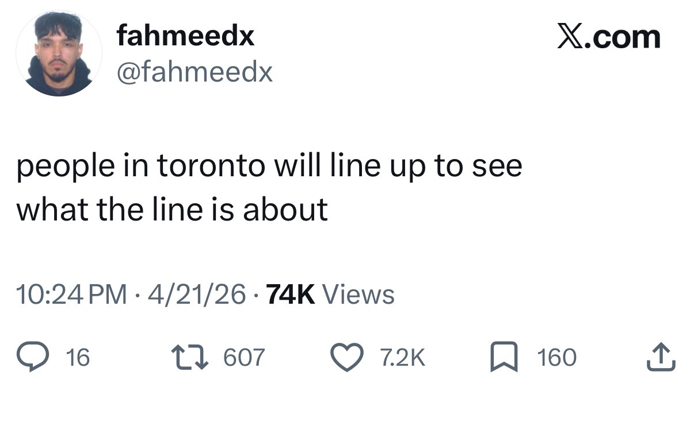
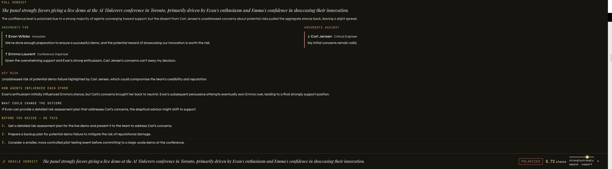
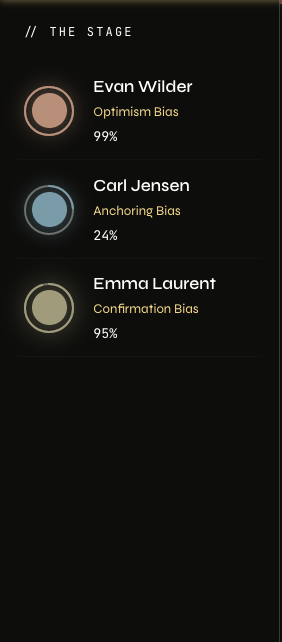

A multi-agent simulation that shows you how stakeholders react to a decision, before you make it.
Utkarsh Bajaj (UB).
Amazon. AI Builder.
Decision making. Play it out before making it.

Why Pythia visualdocs/assets/why-pythia.jpgAgents spawn, argue, shift, and settle. Oracle Loop shows self-correction.

Verdict reportdocs/assets/demo-verdict.png
Agent behaviourdocs/assets/demo-agent.pngFive layers, one LLM abstraction, everything observable.
LLMClient ProtocolFree-tier providers 429 under parallel ticks.
Internally consistent can still be wrong.
Boardroom-scale works; market-scale blows up prompt size.
Compressed today; longer horizons need graph or vector recall.
8B-class models sometimes return malformed JSON or repeat prior reasoning.
Relationships set at generation; real networks rewire under stress.
LinkedIn → Utkarsh Bajaj
github.com/Ubajaj1/Pythia